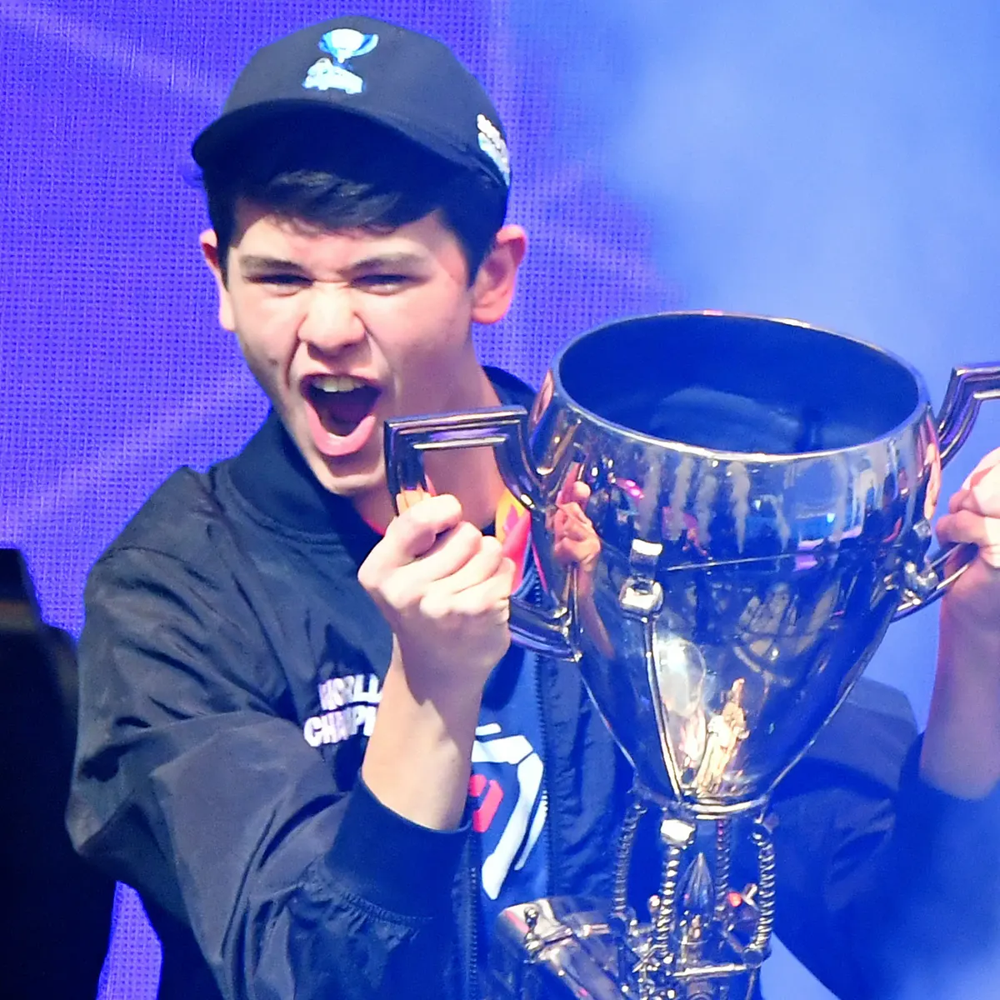

Kyle was first introduced to fortnite by his father who told him about the "save the world" gamemode before the battle royale gamemode came out. Kyle started playing fortnite battle royale in 2017 when the gamemode first came out. His name on Fortnite is Bugha because thats what his grandfather called him when he was younger. As the game progressed, people got better, but Bugha was rising faster in skill than any other fortnite player out there.

Giersdorf inked a contract with the Esports organization Sentinels on March 25, 2019, to join their Fortnite team after playing with team No Clout. Giersdorf qualified for and participated in the inaugural Fortnite World Cup, which was held from July 26 to July 28, 2019. He participated in the Solos competition on the 28th. Giersdorf had the opportunity to compete in 6 games against the other 99 players who had also qualified. Giersdorf ultimately won with 59 points, nearly tripling second-place finisher Psalm's 33 points. Kyle got a prize for $3,000,000.
